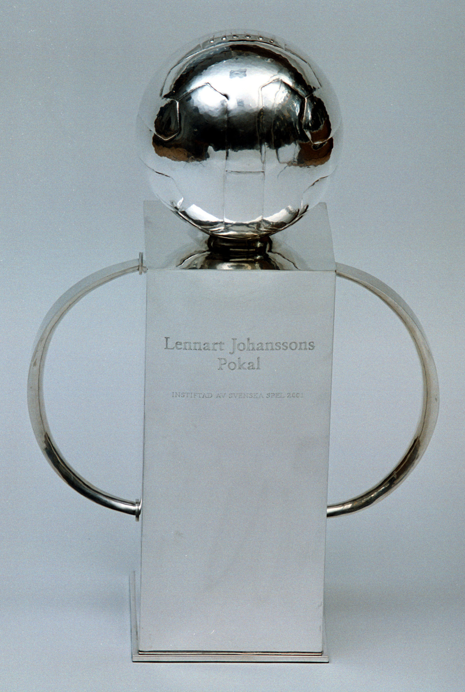
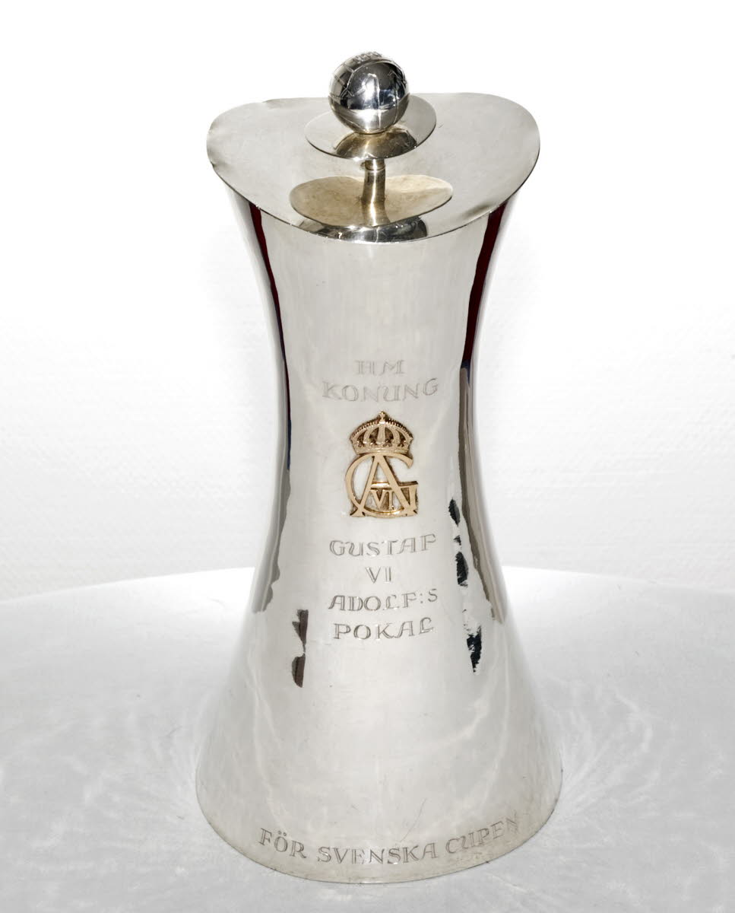
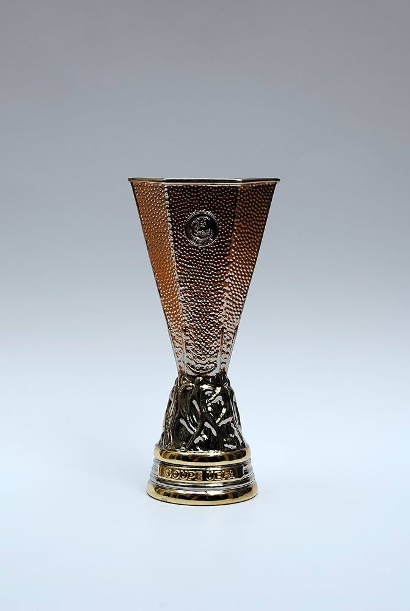

IFK Göteborg
Om laget
Historia
IFK Göteborg, kallade Blåvitt, grundades den 4 oktober 1904 i Göteborg. Under de första decennierna växte klubben till ett av Sveriges starkaste lag och vann sina första svenska mästerskap.
Den största framgången kom på 1980-talet, då laget vann UEFA-cupen både 1982 och 1987. Under 1990-talet blev klubben svensk mästare flera gånger och spelade även i Champions League. Än idag är IFK Göteborg ett av Sveriges mest framgångsrika lag, med 18 svenska mästerskap, och spelar sina hemmamatcher på Gamla Ullevi.
Pokaler

Allsvenskan: 18
Svenska Cupen: 8
Europa Leauge: 2